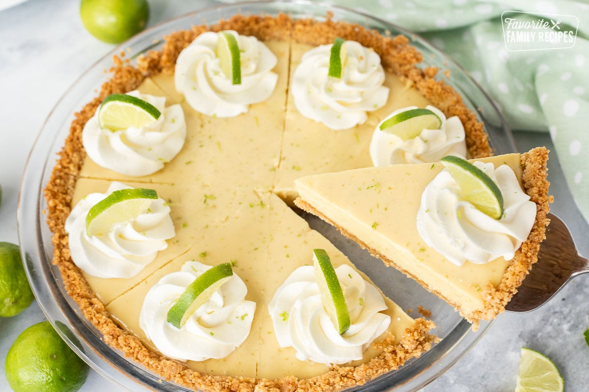

Key Lime Pie

This Key Lime Pie is smooth, creamy, and perfectly balanced between tart and sweet. I stumbled upon this Key Lime Pie Recipe in a small downtown shop when I was visiting Savannah, Georgia with my friend, Amie. Savannah has got to be one of the most beautiful and charming cities ever. We had so much fun touring the historic city squares, walking along the river, and eating delicious Southern food.
Ingredients
1/3 cup butter melted
1/4 cup sugar
1 1/4 cup graham craker crumbs
4 egg yolks
6 key limes for zesting and juicing
14 onces sweetened condensed milk
Nellie&Joe's Famous Key West Lime Juice (if needed)
whipping toppings to garnish(optional)
Steps
- Combine melted butter and sugar in a medium bowl.Stir in crushed graham crackers
- Spred evenly into 9inch plate and press onto bottom and sides to form even crust.The bottom of a measuring cup works great for pressing the crumbs firmly into the pie plate
- Chill for an hour until firm OR bake at 375-degrees for 5 min and allow to cool before filling.
- Preheat oven to 350-degrees
- Zest key limes until there are 2 teaspoons of zest, then juice them. Pour the fresh key lime juice into a ½ cup measuring cup.
If the ½ cup isn't filled, add bottled key lime juice to fill it completely.
- Whisk the egg yolks until they are thick and turn to a light yellow. Use a stand mixer or an electric mixer. Slowly add sweetened condensed milk while mixing on a low speed.
- Gradually add the key lime juice and zest and continue to mix on a low speed just until blended.
- Pour the mixture into the prepared pie shell and bake 15 minutes.
- Remove and let it cool to room temperate then store in the refrigerator until ready to serve.
- Serve with a garnish of whipped topping lime slices and little lime zest, if desired.